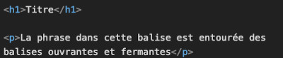
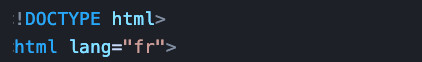

Tim Berners-Lee est à l'origine du Web. Lorsqu'il était chercheur pour le CERN (Conseil Européen pour la Recherche Nucléaire), il a eu le besoin de partager ses travaux de recherche avec d’autres chercheurs internationaux. Il a donc décidé de publier ses textes et ses images sur son ordinateur de travail. Or, il était très compliqué pour tous ces chercheurs internationaux d'accéder à son ordinateur de travail 24h/24h et 7j/7, de travailler sur les mêmes sujets, de les consulter et de partager ses recherches. Il a donc imaginé une solution afin que chaque chercheur puisse consulter et partager ses travaux de recherche. L’équipe de Tim Berners-Lee a donc créé une solution avec son équipe sur la gestion de l'information et l'hypertexte. En effet, Tim Berners-Lee avec son collègue Robert Caillau avaient pour objectif de :
Tim Berners-Lee a donc eu l'idée d'utiliser Internet pour permettre l'accès à son travail depuis son ordinateur mais sans pour autant donner l'accès à tous ses documents. Il partage alors sur son ordinateur ses documents, ses textes et ses images. Pour cela, il lui fallait créer un point d'accès, la page d'accueil va naître avec pour fonction d'accéder aux documents grâce à des liens qui vont mener sur les différentes pages.
L’ordinateur de Tim Berners-Lee va finalement rester connecté tout le temps 24h/24h et 7j/7. Il se transforme en serveur web. Les autres chercheurs qui sont dans le monde entier vont devoir installer un navigateur, l'adresse du site web et celle de l'adresse IP. En effet, l'IP permet de communiquer entre le navigateur et le serveur web où sont stockées les données, les pages web. Il va alors chercher les pages web qui sont sur le serveur web. Les pages selon la hiérarchie des dossiers et des sous-dossiers vont se charger depuis le serveur web. Globalement, le client, l'internaute va demander au serveur par un protocole de communication de charger les pages web. Il a fallu du temps à l'équipe de Tim Berners-Lee afin de créer toutes ces technologies qui vont permettre d'accéder au partage de son travail :
A retenir :
Le digital évolue constamment, il est donc nécessaire d'effectuer une veille et d'être en alerte. Le chef de projet digital doit accompagner son équipe dans les choix techniques et avoir une base de connaissance sur la technique du web.
En effet, entre les différents lanagages pour le front-end et le back-end, les sites et les applications, il existe pléthore de solutions techniques.
Le Chef de projet digital devra effectuer des choix avec son équipe pour identfier la meilleure solution selon les besoins des utilisateurs.
Selon les projets, il sera possible d'utiliser un CMS ou un développement intégral.
Les choix pourront s'effectuer en fonction de plusieurs paramètres et le contexte du projet. La technologie de développement est au service du projet afin d'obtenir un résultat probant selon les besoins des utilisateurs.
Plusieurs langages sont à la disposition des développeurs, entre HTML, CSS, JavaScipt, PHP et SQL. Il est aussi possible d'utiliser les CMS et plus particulièrement WordPress utilisé mondialement avec sa détention de 34 % de sites développés. WordPress a désomais une communauté extarordinaire qui permet au CMS un développement solide et constant. Nous notons que la communauté est une force indispensable au développement OpenSource et de Framework.
Le Chef de projet devra gérer des conceptions intégrales , des refontes de site web, il aura aussi à collaborer avec son équipe et des partenaires externes.
La connaissance des langages de programmation pour un Chef de projet digital est une valeur ajouté, il lui sera possible de mieux dialoguer avec ses équipes et d'entrevoir les possibilités techniques les plus adéquats. Pour ce faire, les bases des langages HTML et CSS sont vraiment nécessaires. Celui lui pemettra de comprendre le fonctionement d'un navigateur et son rôle, la coorélation des langages et leurs modes de fonctionnement.
Il est d'ailleurs intéressant de comprendre l'évolution des langages, l'impact des technologie et des supports d'affichage : ordinateurs, tablettes et smartphones. En effet, les modes d'affichages des sites web tels que :
s'adaptent pour le confort utilisateur. Ce qui a pour impact la gestion de plusieurs langages afférents aux différents supports d'affichage. Les métiers du Web ont également connus un boulversement avec les caractérisiques des langages utilisés pour l'interface visible par les utilisateurs qui est le front-end et la partie invisible mais indispensable qui est le front-end.
Les métiers du Web vont alors se préciser et se distinguer selon le front-end et le back-end.
Le chef de projet digital devra alors s'entourer d'une équipe avec les compétences pour le dévellopement d'un projet web.
Il sera nécessaire pour cette équipe de maîtriser les langages en front-end :
Il sera aussi possible d'utiliser les frameworks :
Pour ce qui du Back-end :
Il sera aussi nécessaire pour des raisons d'optmisation de développement et de coûts d'utiliser des frameworks :
En effet, un des rôles du Chef de projet digital avec son équipe sera alors d'identfier les différentes solutions pour l'optmisation des supports et des besions utilisateurs.
Pour se faire, il est donc nécessaire de comprendre l'intérêt des langages, des frameworks et le sens de leurs utilisations.
Les différents systèmes d'exploitation utilisent leurs propores langages entre Windows, macOS et Linux.
En parrallèle et selon les avancées technologiques, il apparait différents supports afin d'aficher les pages web. Les navigateurs vont également évoluer et favoriser l'affichage et les interactions utilisateurs.
Il s'avère d'ailleurs que les grandes entreprises du digital vont créer leurs navigateurs allant d'IE pour Microsoft, Mozilla pour la fondation Firefox, Safari pour Apple et Chrome pour Google.
Pour ce qui est des langages de programmation, les différents langages vont évoluer entre le HTML, CSS, JavaScript, PHP, SQL, et Python.
En ce qui concerne les mobiles, il existe deux langages entre Android pour Google et IOS pour Apple.
Les différentes tailles d'écran, les besoins utilisateurs, la synchronisation des bases de données en temps réel vont faire émerger une optimisation dans l'utilisation des langages afin qu'ils soient utilisés pour les différents terminaux.
Pour cela, un modèle hybride va émerger en 2011 dénomée cross Platform qui va englober le site web et l'application.
C'est grâce au navigateur qu'une page web s'affiche et qu'elle devient compréhensible à sa lecture par les êtres humains.
Sans le navigateur, nous aurions un afichage complexe de donnnées qu'il nous serait impossible de comprendre.
Le navigateur va alors traduire la page web grâce à un système de marquage et de balises.
Il existe à ce jour plusieurs navigateurs tels que :
En effet, c'est grâce au langage HTML (Hyper Text Markup langage) - "Langage de balisage hypertexte" qu'il nous est possible d'organiser et de rendre visible une page web.
Nous pourrons alors afficher et structuer un texte constitué de titres, de paragaphes et d'images. C'est quelque sorte notre canevas de départ pour la mise en place d'une page web.
La mise en forme sera ensuite effectuée par le CSS (Cascading Style Sheets), comme une forme de cascades de plusieurs feuilles de styles. Nous pourrons en effet apporter la nécessaire complémentarité visuel et mise en forme pour une lecture plus attrayante d'une page web.
Il nous est tout d'abord, nécessaire de choisir un éditeur de texte ou un environnement de développement intégré. Pour ce faire, l'installation de Visual Studio Code est requise afin de développer progressivement les lignes de code pour des pages web.
Pour commencer, il nous est tout de même nécessaire d'identfier la composition des balises HTML.
Celles-ci sont structurées par des chevrons et des mots significatifs en fonction de l'affichage que nous voulons transmettre au navigateur.
Les balises ont pour rôles d'envoyer des instructions au navigateur, celles-ci sont composés principalement en paires d'une balise ouvrante et fermantes ou soit d'une balise seule, qualifiée d'orpheline.
Selon, ce que nous désirons organiser comme contenu textuel, nous aurons une balise qui va entourer un mot ou une phrase, un paragaphe. En effet, grâce à nos balises ouvrantes et fermantes, un affichage se produira dans la navigateur.
Il nous est également nécessaire d'identfier la structuration globale d'une page web afin que celle-ci soit reconnue dans son intégralité par le navigateur.
En effet, une page web est identifibale en fonction d'une structure précise qu'il convient d'énumérer.
La première ligne avec le Doctype, nous permettra d'indiquer au navigateur qu'il s'agit bien d'une page web. Par la suite, la balise html englobera l'intégralité du code, sans oublier :
Nous pourrons alons commencer à coder et à réaliser une première page web et sa mise en forme avec le CSS.
Pour cela, il sera nécessaire de connaître les différentes balises afférentes à notre organisation de contenu. Nous pourrons alors nous aider de ressources afin d'identfier le qualificatif des balises :
Il nous est donc possible dorénavant d'afficher des informations de texte dans le navigateur. Or, il nous sera maintenant utile de créer une forme identifiable qui intègrera les textes et les mises en forme.
Pour ce faire, nous devrons créer en quelque sorte des boîtes dans des boîtes.
C'est donc d'autres balises qui vont nous servir pour réaliser ce type d'ations avec la dénomination de la balise générique div et span.
Ces balises ont longtemps servi comme seules références pour les codeurs, elles restent bien évdemment très utilisés.
Elle s'effectue grâce au fichier CSS, nous pourrons grâce à celui-ci mettre du style à nos balises. En effet, c'est grâce à une syntaxe précise composée de propriétés et ses valeurs que nous déterminerons la mise en forme de notre page web.
Il nous sera nécessaire d'activer la sélection des balises que nous voulons mettre en forme. Pour ce faire, c'est l'utilisation des sélecteurs qui sera effective en sélectionnant les balises requises :
Pour cela, nous devons charger une page depuis une serveur, il y a un chargement depuis le serveur avec la base de données. Nous pourrons alors obtenir une page web qualifiée de dynamique. En effet, l'utilisateur va pouvoir charger la page selon sa demande. Ce qui est en effet, ce qui caractérise par une page spécifique selon son identifiant et plus particulièrement selon la base de données qui va charger sa page.
Nous commençons avec le "Front" et sa spécificité de l'utilisation HTML et CSS3, le JavaScript.
C'est aussi les autres langages pour le back entre le PHP et ses variables, les bases de données, le SQL.
En effet, il est utile de comprendre que les pages web sont sotckés dans des serveurs.
Le langage SQL va alors être utilisé comme sous forme de collones et de rangées
Il était intéressant de comprendre le fonctionnement de la page web.
Il est utile de comprendre que le langage de programmation est un langage interprété.En effet, il va lire ligne par ligne le code qui est affiché par le navigateur. Nous utilisons des balises qui sont composées de chevrons.
Pour ce qui est de la structure d'une page web, nous devons tout d'abord déclarer la page afin qu'elle soit reconnue auprès du navigateur. Une page web est composée de plusieurs parties : l'entête avec la balise head et le corps de la page avec la balise body.
Nous pouvons dans la balise head produire plusieurs actions. Il nous est possible de :
Pour continuer, nous allons strtcurer notre page web avec des boîtes, celles-ci représentent en quelque sorte les grands briques d'une page web. Nous les identifions avec une balise générique qui est div.
Nous pouvons construire une boîte avec les balise div.
Cela va nous permettre de définir une structure à notre page web.
En effet, il nous sera nécessaire d'utiliser des balises pour commencer un affichage sous forme de blocs avec des balises génériques qui sont les div et les span. Ces balises vont nous permettre de structurer notre code et d'afficher des blocs.
Il nous est désormais nécessaire d'effectuer la mise en forme de notre code. Pour ce faire, nous allons utiliser un autre fichier spécifique qui est le CSS.
C'est bien grâce au CSS que nous allons pouvoir par exemple colorer les titres, l'intérieur et le contour des boîtes.
Afin de rendre attaryant notre code HTML, nous allons simplement créer un fichier avec l'extention .css, il sera alors reconnu par le navigateur comme ficher de mise en forme. Il nous sera aussi utile de lier le fichier HTML et CSS. Pour cela, nous utiliserons la balise link dans le code HTML et plus spécifiquement dans la balise head.
Nous pourrons alons alors obtenir entre autre une mise en forme des fameuses boîtes avec notre balise div dans le code HTML. Pour appliquer, le CCS, nous devons utiliser des proprités et des valeurs. En effet, une balise dans le code HTML sera sélectionnée avec nottament un sélecteur et il sera possible d'insérer un fond avec une couleur, des marges internes et externes. Nous retrouvons les spécifications des ces proprités sur le site du MDN Web Docs de Mozilla Firefox. marging pour l'extérieur et le padding pour l'intérieur.
Pour revenir, sur le fichier CSS , nous devons donc lier les fichier HTML et CSS afin d'activer toutes les possibilités de mise en forme grâce aux sélecteurs. Suite à cette action, il nous sera nécessaire de comprendre le fonctionnement des sélecteurs et leurs propriétés. En effet, c'est grâce aux ciblages des éléments HTML que nous pourrons mettre ceux-ci en forme.
Il existe plusieurs possibilités dans le ciblage des éléments HTML, la base de cette action consiste à identfier la balise sur laquelle nous voulons agir, si nous prenons pour expemple la balise h1, nous obtiendrons dans le CSS :
Nous pouvons même spécifier les dimensions des boîtes des balises div selon les propriétes et leurs valeurs :
Pour en savoir plus, sur le modèle de boîte , il est plutôt reconnandé de consulter le site du MDN web docs qui explique leur fonctionnement et leur postionnement dans une page HTML.
Il est tout de même indispensable d'évoquer le traitement des couleurs pour une page web. En effet, il existe un standard numérique nottament pour les écrans d'ordinateur qui est le RGB, comme évoqué dans la page Wikipédia dédié au sRGB que nous vous invitons à consulter.
Les images ont également leurs spécificités. Ils'avère qu'ilexiste plusieurs formats d'images entre :
Le HTML va évoluer et les balises sémantiques vont faire leurs apparitions. Il sera alors possible d'apporter du sens au contenu d'une page web. Comme, nous l'avons évoqué précédemment, une boîte peut se créer grâce à la balise div. Or cette balise n'a pas spécifiquement de sens hormis de positionner un élément dans une page web.
Grâce aux balises sémnatiques, le navigateur va identifier précisemment le sens des balises coorrélés à son contenu.
Pour aller plus loin, dans cette compréhension de balises sémantiques, il est intéressant de consulter l'article du MDN web docs.
Chaque balise HTML a une fonction précise qui permet au navigateur d'interpréter celle-ci. En effet, une balise est composée d'une signfication identifée par une lettre tellle que p pour paragraphe, a pour ancre ou img pour images. Pour en savoir plus, il est intéressant de consulter l'article du MDN web doc.
Une balise est également composée d'une portion de texte ou d'images, cette ensemble va alors se caractériser par la dénomination "éléments".
Nous ne pouvons pas oublier les attributs, ils sont les options de toutes les balises. Ils sont toujours spécifiés dans les balises ouvrantes et ils sont composés d'un nom et d'une valeur.
Pour en savoir plus, il est intéressant de consulter cet article de la w3schools.
C'est grâce à la balise form que nous allons pouvoir débuter la création d'un formulaire. En effet, celle-ci va nous permettre d'effectuer la déclaration au navigateur d'un formulaire. La balise form requiert d'autres spécificités et pour cela la consultation du site w3schools apporte les informations complémentaires pour la bonne mise en place d'un formulaire.
En complément de la gestion d'un formulaire, il y a aussi la méthode avec get et post. Il s'avère qu'avec get l'affichage des informations n'est pas sécurisé. En effet, avec le get, tout s'affiche dans le navigateur. Pour ce qui est de post, nous pouvons envoyer des informations en PHP sur la base de données.
C'est la petite image qui est affichée à côté du titre du navigateur. Il existe une technique pour ajouter celle-ci qui est expliquée sur le site du w3schools.
Le traitement des caractères spéciaux mérite une attention particulière. En effet, une écriture classique n'est pas suffisante. Il sera alors utile d'utiliser une écriture spécifique qui est indiquée dans cet article de la w3schools.
Il existe une technique pour insérer une vidéo que nous avons utiliser avec la balise iframe.
Le contenu de qualité a une importance capitale pour que les pages web soient indexées dans le célèbre moteur de recherche Google.
En effet, c'est bien un moteur de recherche qui va nous permettre d'effectuer une recherche de pages web selon les mots-clés que allons indiquer.
Il nous est important de comprendre le fonctionnement du moteur de recherche et toutes les fonctions spécifiques à celui-ci qui interagissent sur le référencement natuel.
Pour cela, il existe des techniques précises qui vont répondre aux 200 critères du moteur de recherche Google. C'est alors une notion de SEO qu'il est nécessaire de comprendre et ses impacts sur les pages web.
Il est désormais nécessaire à ce que notre site web s'adapte à toutes les tailles d'écran. Il pourra alors être responsive design et s'adapter aus différents supports.
Le CSS 3, nous permet d'utiliser des règles pour indiquer au navigateur la mise en forme proposée selon les tailles d'écran.
Pour ce faire, nous utilisons des règles précises et il est intéressant de consulter ses ressources :
Pour apporter un confort de lecture, il est opportun de proposer une police approprié en fonction du contexte.
Il existe plusieurs possibilités pour modifier la police de son site web.
Une de celles-ci est d'utiliser la bibliothèque Google fonts. Ce qui va nous permettre simplement d'utiliser toutes les polices et de les appliquer comme expliquée sur le site web de Google fonts.
C'est un cadre de travail pour le front et le back.
Il est nécessaire d'optimiser son travail pour la création ou le développement d'un site web. En effet, si nous devons développer toutes les lignes de code pour les adapter pour les différents écrans, cela prend beaucoup de temps.
Pour parer à cela, il est possible d'utiliser les Framworks. Il existe un Framework qui s'appelle Bootstrap Il s'avère que Bootstrap a été développé par Twitter, il est désormais en OpenSource.
En ce qui concerne les avantages de Bootstrap, cela nous permet facilement de gérer les différents médiaqueries.
Il est aussi possible de simplifier le mise en place du code.
Il s'avère également que Bootstrap facilite la mise en place de l'accessibilité et donc du référencement natuel
Pour démarrer Bootstrap, il est recommandé de suivre différentes étapes explicatives sur le site.